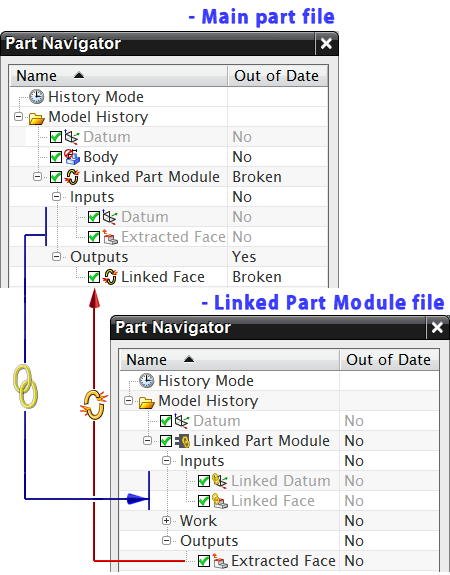
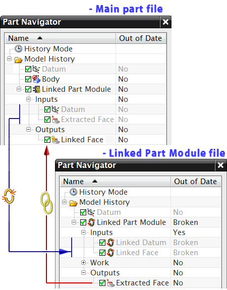

您可能需要断开主部件文件和链接部件模块文件之间的关联，并建立与其他部件文件模块文件之间的关联。当您为复杂部件的单个区域创建多个设计，并需要根据选择的设计更新该部件时，此功能非常有用。
您必须首先通过使用断开关系命令断开关联，然后使用建立关系命令建立新的关联。
断开关系命令可断开选择该命令时可用的文件和使用 WAVE 链接的文件之间的关系。
从主部件文件选择断开关系命令后，将断开输出收集器中与对象的 WAVE 链接。

从链接部件模块文件选择断开关系命令后，将断开输入收集器中与对象的 WAVE 链接。

如果主部件文件只有一个链接部件模块，NX 将立即断开关系。如果主部件文件中具有两个或多个链接部件模块，则必须选择要在选择部件模块特征对话框中断开的关系。
使用建立关系命令建立主部件文件和在相同会话中加载的链接部件模块文件之间的关联。
|
应用模块 |
建模和外观造型设计 |
|
菜单 |
格式→部件模块→断开关系或建立关系 |